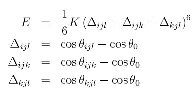

improper_style ring command¶
improper_style ring/omp command¶
Syntax¶
improper_style ring
Examples¶
improper_style ring
improper_coeff 1 8000 70.5
Description¶
The ring improper style uses the potential
where K is a prefactor, theta is the angle formed by the atoms specified by (i,j,k,l) indices and theta0 its equilibrium value.
If the 4 atoms in an improper quadruplet (listed in the data file read by the read_data command) are ordered i,j,k,l then theta_*ijl* is the angle between atoms i,j and l, theta_*ijk* is the angle between atoms i,j and k, theta_*kjl* is the angle between atoms j,k, and l.
The “ring” improper style implements the improper potential introduced by Destree et al., in Equation (9) of (Destree). This potential does not affect small amplitude vibrations but is used in an ad-hoc way to prevent the onset of accidentially large amplitude fluctuations leading to the occurrence of a planar conformation of the three bonds i-j, j-k and j-l, an intermediate conformation toward the chiral inversion of a methine carbon. In the “Impropers” section of data file four atoms: i, j, k and l are specified with i,j and l lying on the backbone of the chain and k specifying the chirality of j.
The following coefficients must be defined for each improper type via the improper_coeff command as in the example above, or in the data file or restart files read by the read_data or read_restart commands:
- K (energy/radian^2)
- theta0 (degrees)
theta0 is specified in degrees, but LAMMPS converts it to radians internally; hence the units of K are in energy/radian^2.
Styles with a cuda, gpu, intel, kk, omp, or opt suffix are functionally the same as the corresponding style without the suffix. They have been optimized to run faster, depending on your available hardware, as discussed in Section_accelerate of the manual. The accelerated styles take the same arguments and should produce the same results, except for round-off and precision issues.
These accelerated styles are part of the USER-CUDA, GPU, USER-INTEL, KOKKOS, USER-OMP and OPT packages, respectively. They are only enabled if LAMMPS was built with those packages. See the Making LAMMPS section for more info.
You can specify the accelerated styles explicitly in your input script by including their suffix, or you can use the -suffix command-line switch when you invoke LAMMPS, or you can use the suffix command in your input script.
See Section_accelerate of the manual for more instructions on how to use the accelerated styles effectively.
Restrictions¶
This improper style can only be used if LAMMPS was built with the USER-MISC package. See the Making LAMMPS section for more info on packages.